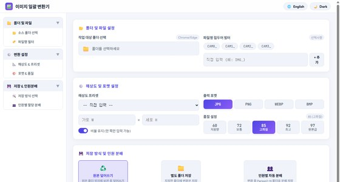
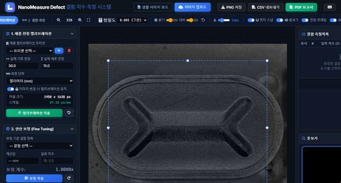
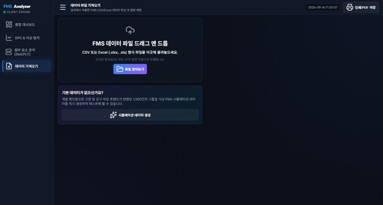
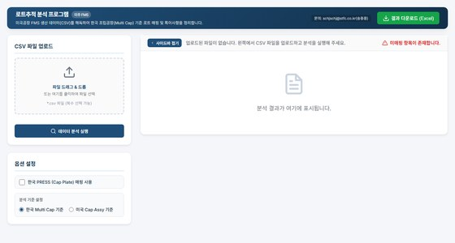
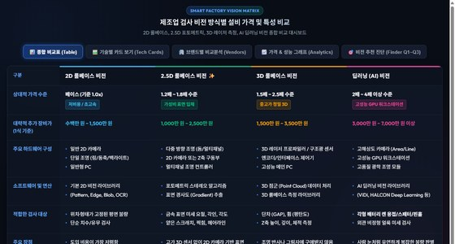

품질 보증, 검사 비전 분석, 설비 공정 이상 탐지 및 업무 자동화를 위한 통합 엔지니어링 웹 플랫폼
대용량 검사 이미지를 WebP, JPG, PNG, AVIF 포맷으로 변환하고 리사이즈 및 압축을 브라우저 내에서 즉시 처리합니다.

현미경/비전 이미지 기준자 캘리브레이션, 선분 거리·박스·면적 정밀 측정 및 PDF 성적서를 자동 출력합니다.

설비 측정 데이터(CSV/Excel)의 SPC 통계 공정관리(Cp, Cpk, 관리한계선), 시계열 이상 탐지 및 파레토 분석을 수행합니다.

생산 공정 전주기(원소재~가공~검사) Lot 계보를 역추적하여 불량 발생 시 설비/공정 상관관계를 분석하고 서식 엑셀로 내보냅니다.

머신비전 4대 기술(2D, 2.5D, 3D, AI)의 검출력, 택트타임, 조명 민감도, 투자비를 레이더 차트로 비교하고 ROI를 시뮬레이션합니다.
